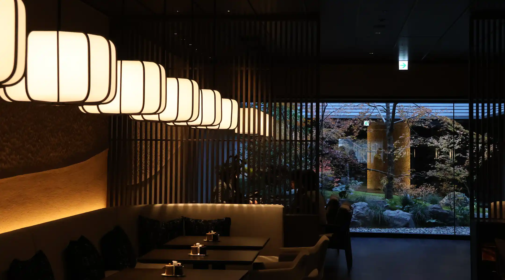

Fundado em 1990 no coração da cidade, o Château Noir nasceu da paixão pela gastronomia francesa tradicional e pelo desejo de oferecer experiências únicas. Inspirado nas brasseries parisienses, combinamos sofisticação e autenticidade em cada prato, sempre preparado com ingredientes frescos e técnicas refinadas.
Ao longo dos anos, nos tornamos referência em alta gastronomia, criando momentos especiais e memórias inesquecíveis para nossos clientes.
Preparado com creme de limão artesanal, toque de manteiga clarificada e redução de vinho branco europeu,
finalizado com ervas frescas e notas delicadas de raspas de cítricos.
Um prato refinado, equilibrado e criado para realçar o sabor natural da lagosta.
"Melhor restaurante francês que já visitei! Atmosfera perfeita."
- Camila Duarte"Pratos impecáveis e atendimento elegante. Voltarei sempre."
- Thiago Salazar"Experiência gastronômica indescritível. Perfeito!"
- Juliana Martins